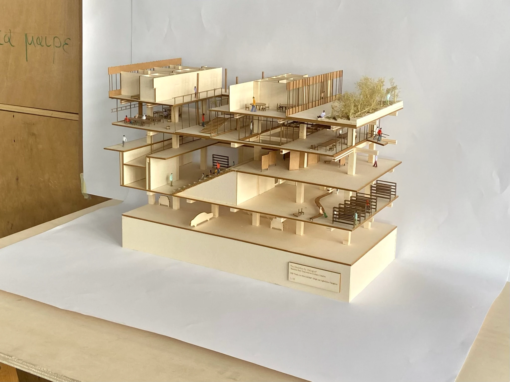
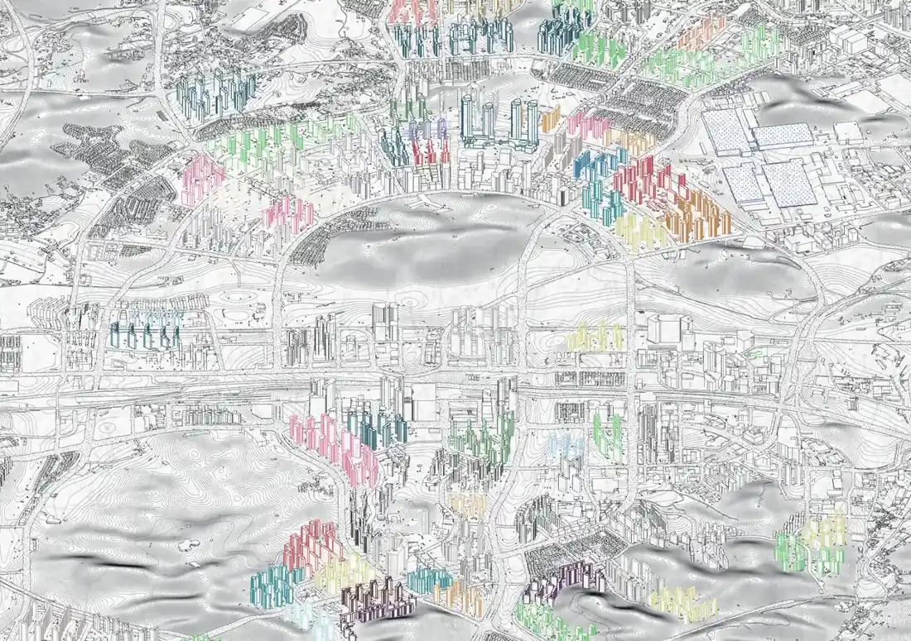

ARTIFICE
about
projects
atlas
contact
Projects
02
projects

01 Paris, France
La machine du dialogue

02 Hwaseong, South Korea
Dongtan: The Making of a Consumer City
All projects
01 of 02
Project
01 of 01
Previous
Next
Documents
00
Another project